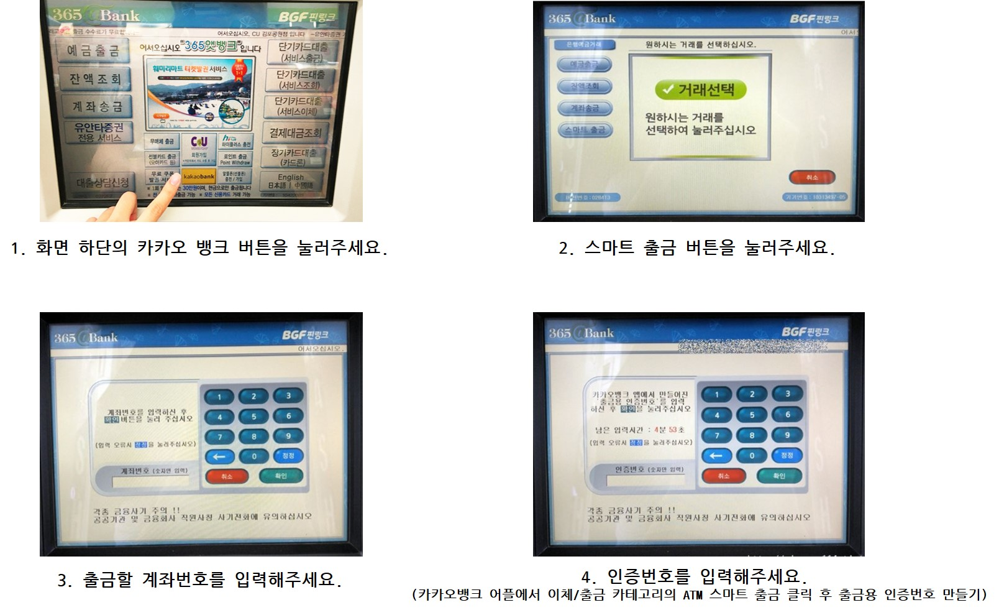

편의점 서비스 사용 메뉴얼


해당 서비스 설명 바로가기
● ATM
- 카카오뱅크 출금 서비스 (1일 최대 50만원)

● 택배

- 비회원 택배
1. 화면에 보이는 비회원 택배 접수를 눌러주세요.
2. 현장 접수 버튼을 눌러주세요.
3. 보내실 택배를 저울 위에 올려 무게를 재주세요.
4. 상품종류를 선택해주세요. (파손면책 동의 해주세요)
5. 물품 가액을 입력해주세요. (100만원 초과 상품 접수 불가)
6. 보내는 사람의 정보를 입력해주세요.
7. 받는 사람의 정보를 입력해주세요.
8. 결제 방법을 선택해주세요.(착불, 선불)
9. 운송장을 출력하신 후 좌측 스티커를 택배에 붙여주세요.
10. 우측 고객보관용 스티커를 카운터에 보여주세요.
- 회원 택배
1. CU편의점택배 어플을 설치 후 회원가입을 해주세요.
2. 메인 화면에서 국내 택배 버튼을 눌러주세요.
3. 보내는 사람과 받는 사람의 정보, 결제 방법을 입력해주세요.
4. 예약 버튼을 누르면 예약이 완료됩니다.
5. 예약 후 CU 편의점의 키오스크에서 회원 택배 접수를 눌러주세요.
6. 전화번호로 로그인을 해주세요. (QR코드 서비스를 이용하면 빠른 로그인 가능)
7. 접수 구분을 예약건 접수로 선택해주세요.
8. 택배의 무게를 측정해주세요.
9. 운송장을 출력하신 후 좌측 스티커를 택배에 붙여주세요.
10. 우측 고객보관용 스티커를 카운터에 보여주세요.
- CU끼리 택배
편의점 자체 물류망을 활용하여 CU편의점에서 CU편의점으로 배송되는 서비스입니다.
접수가능물품
- 5kg이하
- 세 변의 합 1.0m 이하
- 물품가액 50만원 이하
- 잡화/서적, 의류, 가전제품, 곡물류 접수가능
(식품류, 편지봉투 등 기타상품 접수 불가)
1. CU편의점택배 어플을 설치 후 회원가입을 해주세요.
2. 물품 정보를 입력해주세요.
3. 보내는 사람과 받는 사람의 정보, 결제 방법을 입력해주세요.
4. 예약 버튼을 누르면 예약이 완료됩니다.
5. 예약 후 CU 편의점의 키오스크에서 CU끼리 택배 접수 버튼을 눌러주세요.
6. 전화번호로 로그인을 해주세요. (QR코드 서비스를 이용하면 빠른 로그인 가능)
7. 접수 구분에서 예약건 접수를 선택해주세요.
8. 택배의 무게를 측정해주세요.
9. 운송장을 출력하신 후 상단 스티커를 택배에 붙여주세요.
10. 하단 고객보관용 스티커를 카운터에 보여주세요.
● 커피
- 아이스 아메리카노(큰 얼음컵: XL사이즈, 작은 얼음컵: L사이즈): CU편의점에서 얼음컵을 꺼내오신 후 카운터에 커피머신을 이용한다고 말씀해주세요.
- 아메리카노(L 사이즈만 가능): 편의점 카운터에서 커피머신을 이용한다고 말씀해주세요. (텀블러 이용시 100원 할인)
- 기타: 커피머신 주변에 비치되어있는 커피믹스를 골라주신 후 카운터에 가져와 주세요.